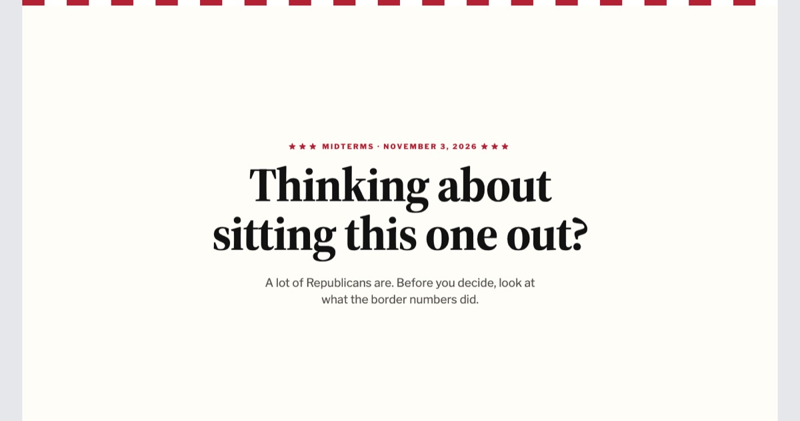
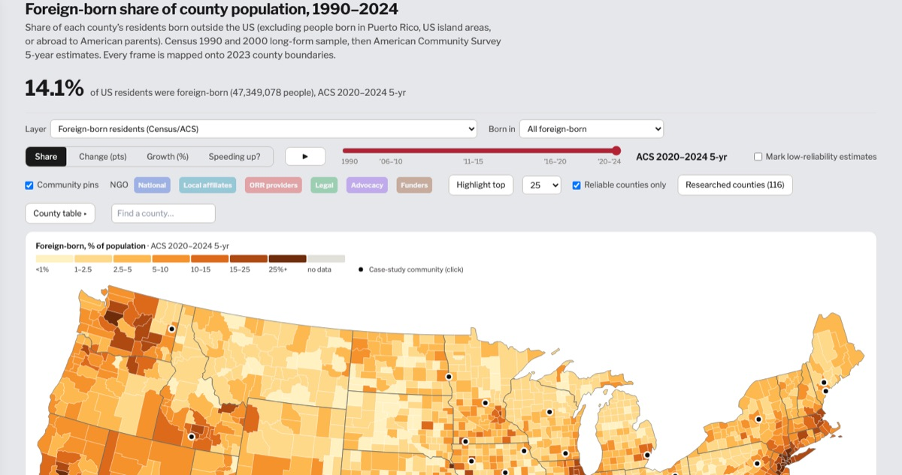
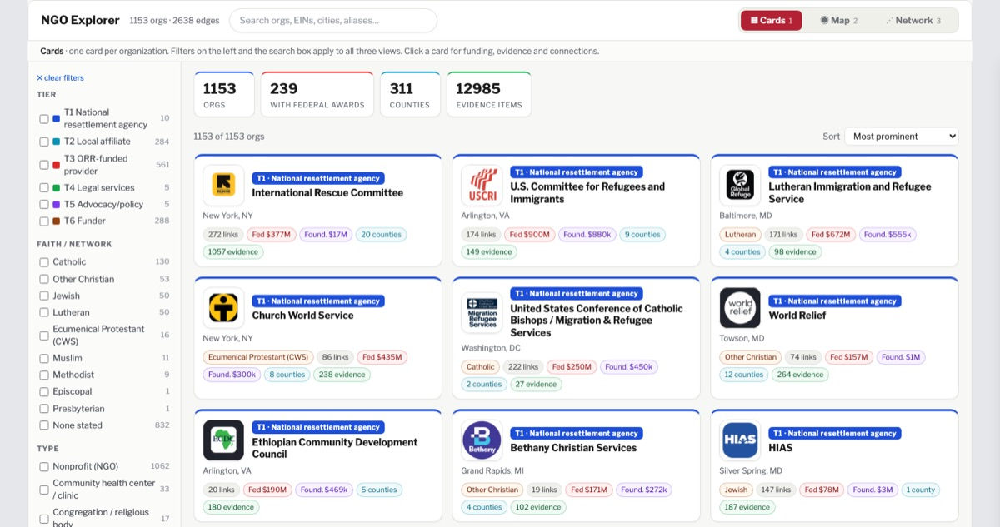

Migration Explorer
What changed at the border after January 2025, where three decades of immigration actually settled, county by county, and which organizations were paid to resettle people – every number from federal records and public filings, linked to source.
See what changed at the border
The border One month in 2023 outnumbered the last nineteen Monthly encounters from CBP's own files, before and after the day-one orders. Read the numbers →
County map Where people settled Foreign-born share for every county, 1990–2024, by region and country of birth, with sourced notes on 116 of the biggest jumps and the federal pathways behind them. Explore the map →
The network Who was paid to resettle them Resettlement agencies, their local affiliates, ORR-funded providers and private funders – each link backed by a federal award, subaward, or IRS filing row. Follow the money →Foreign-born counts are Census and ACS estimates and include citizens and every legal status; border figures are CBP encounters. Dollar figures are documented minimums and are never added across types. Organizations are listed because a public record documents money or an affiliation – a listing alleges no wrongdoing.